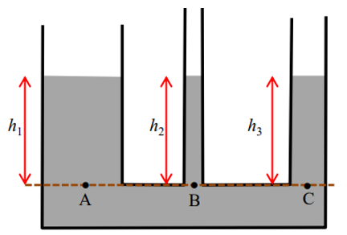

Perhatikan fluida dalam berjana berhubungan dalam Gambar berikut. Pertanyaanya, apakah ketinggian permukaan fluida pada tiap pipa bejana selalu sama? Atau berbeda-beda bergantung pada ukuran pipa? Mari kita selidiki.
Perhatikan garis horisontal tepat di dasar semua pipa vertikal. Tekanan hidrostatis snidi titik A, B, dan C adalah \[P_A = {\rho g h_1}\] \[P_B = {\rho g h_2}\] \[P_C = {\rho g h_3}\] Jika salah satu tekanan lebih besar dari yang lain maka tekanan tersebut mendorong fluida ke lokasi yang bertekanan rendah. Jadi akan terjadi aliran fluida dari lokasi yang bertekanan tinggi ke lokasi yang bertekana rendah. Ini bertentangan dengan sifat zat cair statis yang diam. Jadi, agar fluida tetap diam maka tekanan di A, B, dan C harus sama. Ini hanya mungkin terjadi jika ketinggian fluida pada semua pipa tegak sama. Sehingga, ketinggian permukaan fluidastatis dalam bejana berhubungan selalu sama. \[{h_1 = h_2 =h_3}\]